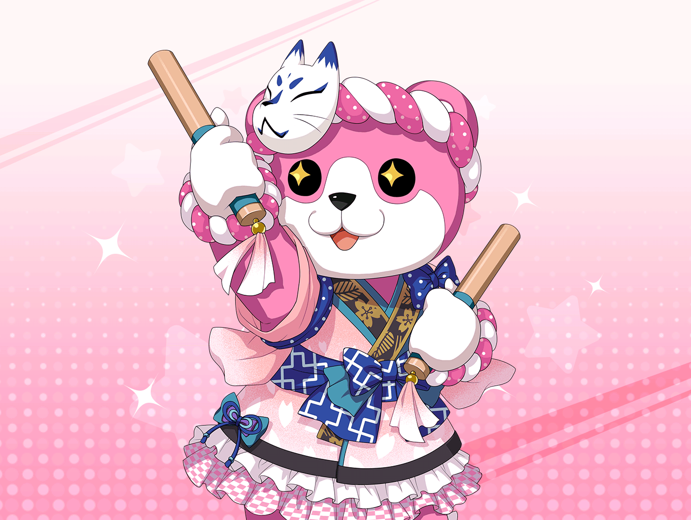

香澄
こんにちは～！
美咲
（こ、この声は……）
香澄
美咲ちゃん！ こんにちは！！
美咲
……ああ、どうも。
戸山さん、相変わらずな感じで……
元気そうで何より、だね……
香澄
あそこの角で、美咲ちゃんに似てる人がいるなーって思って、
急いで追いかけてきたんだ！
美咲
（なぜ、そこまでして……？）
美咲
あ、ありがとう……
香澄
この前のさ、お花見！
私、すっごく楽しかった！
来てくれてありがと〜！
美咲
こちらこそ。
あたしも、まあ、悪くはなかったかな
香澄
だよね！
料理も美味しかったし、おしゃべりも楽しかったし！
最高だったよね！？
美咲
…………
美咲
（悪くはなかったって言ったのに、
勝手に最高に変換されてる……）
香澄
私、やっぱりもう一度お花見したいな～。
ねえ、またみんなでお花見に行こうよ！
美咲
……うん、そうだね。
まぁ、予定が合えば、来年も
香澄
来年？ ちょっと遠いよー
そんなに待てないよー
美咲
待てないって言われても……
今年の桜は、もう散ってますし
香澄
別に桜じゃなくてもよくない？
桜が散っちゃったら、次はバラとか咲くし
香澄
その次はあじさいが咲くじゃん？
その後は、ひまわり……とか？
香澄
……そう考えると、一年中お花見できるよ！
ねぇねぇ、この発見すごくないっ！？
香澄
そうだよ！
『お花見＝桜』なんて決まってないんだもん！
見たい花をみんなで見れば、それはもうお花見だよ！
美咲
は、はあ……
美咲
（この雰囲気……こころと同様のものを感じるな……）
美咲
（あたしの本能が警告を告げてる……。
あまりこの人と深く関わっちゃ……ダメだ！）
美咲
……そ、そうだね。
じゃあ、あたしはこの辺で……
香澄
そう言えば！
この前のお花見のときから思ってたんだけど、
美咲ちゃんって誰かに似てるんだよねー
香澄
んー、誰だっけ？
美咲
ぐ、偶然だね……
あたしも今ちょうど、同じようなことを考えてた
香澄
……え？ それってつまり私が誰かに似てるってこと！？
美咲
ええ、まあ……
香澄
誰？ 誰！？
すごく気になるっ！
美咲
それはまたの機会ということで。
じゃあ、あたしはこの後、
ちょっと行くところがあるんで……
香澄
あ！ そうだったんだ、ごめんね！
引き止めちゃったりして！
美咲
や、別に大丈夫ですけど……
香澄
ねぇねぇ、どこに行くの？
美咲
（グイグイ来るなー、この人……
普通、行き先とか聞かないでしょ？）
香澄
わかった、ひょっとしてバイト！？
美咲
……あ、うん、はい。
そんな感じ。それじゃあまた……
香澄
美咲ちゃん、バイトしてるんだ！？ 高校生って感じー！
なんのバイトしてるの！？
美咲
（……ま、まだ、来るか！？
帰りたい空気をこれほど露骨に出してる人間に、まだ来るか！？）
美咲
え、えーと、まあ……商店街でもの配ったり……
香澄
わかった！ コンビニ？
……あ、喫茶店とか！？
そっか、ファミレスだ！
美咲
い、いえ……ちょっと違うかな……
美咲
（だめだ、聞いてない……）
香澄
こんなに言って違うの！？
なんだろ！？ すごく気になる！
ヒント！ ヒント！
美咲
（なんか突然、クイズ形式になってるんだけど……）
香澄
ねえ、何のバイトしてるの？
おしえてよ～！